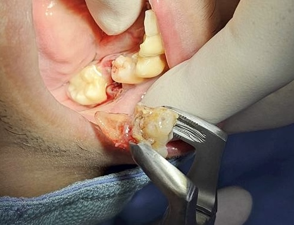
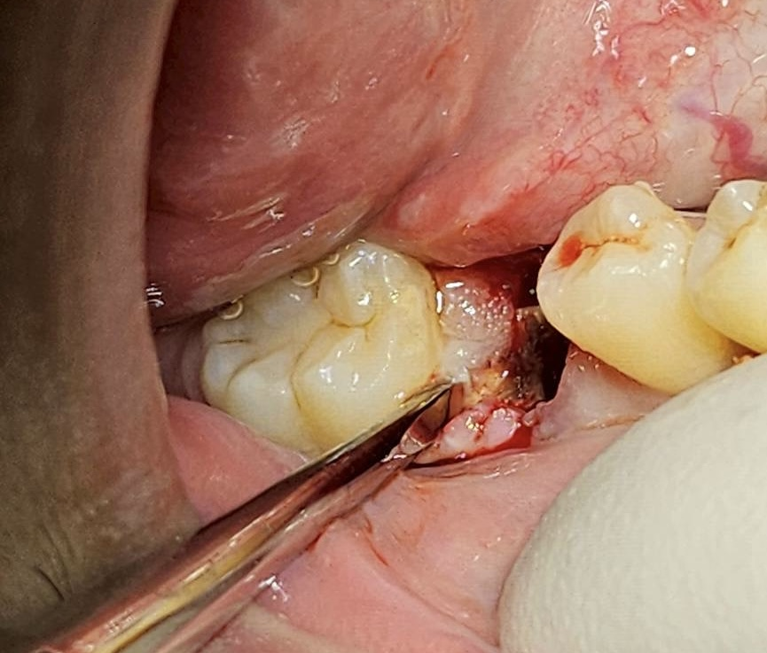
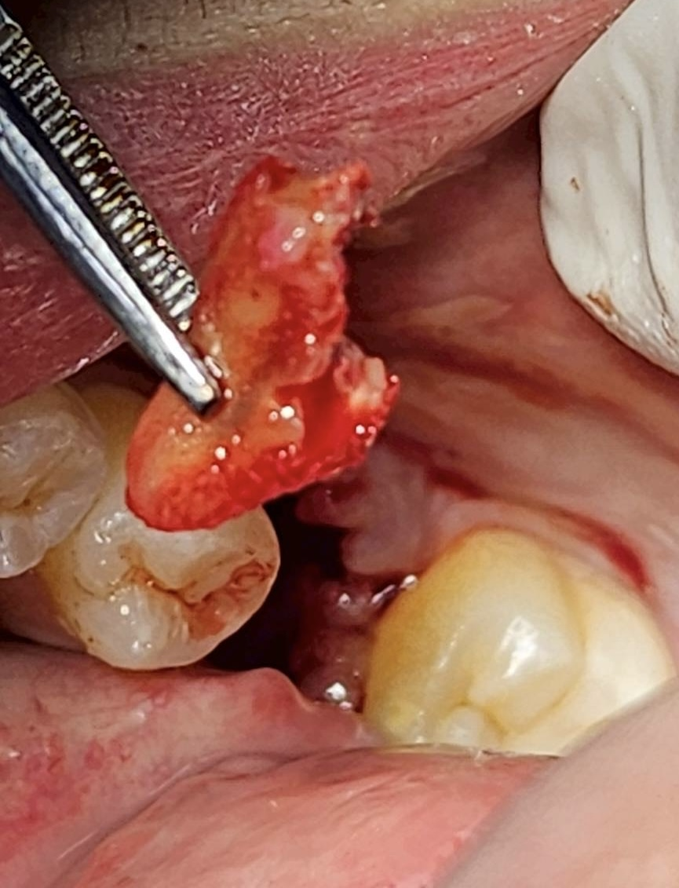
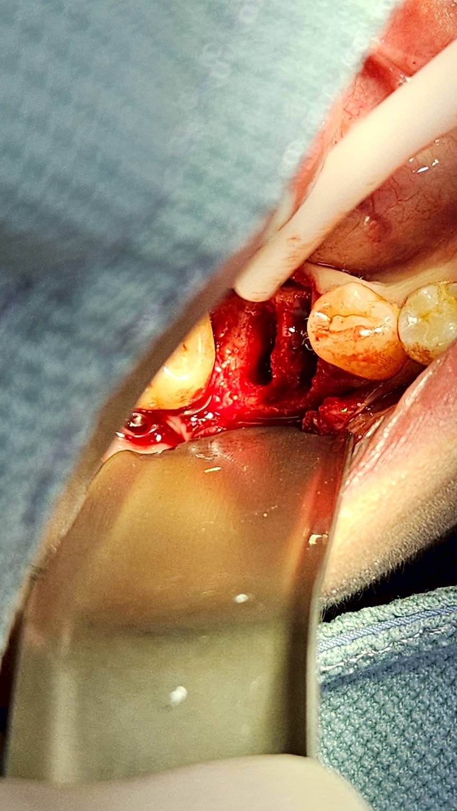
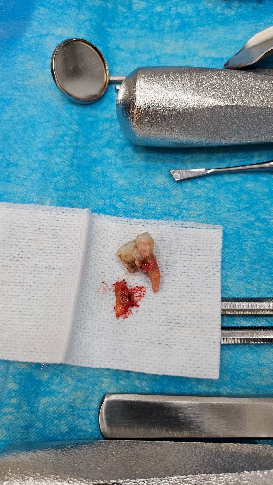
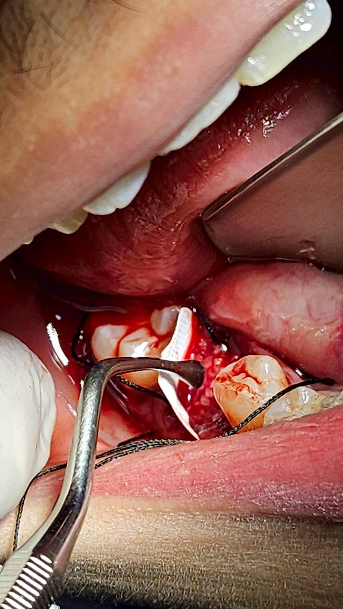
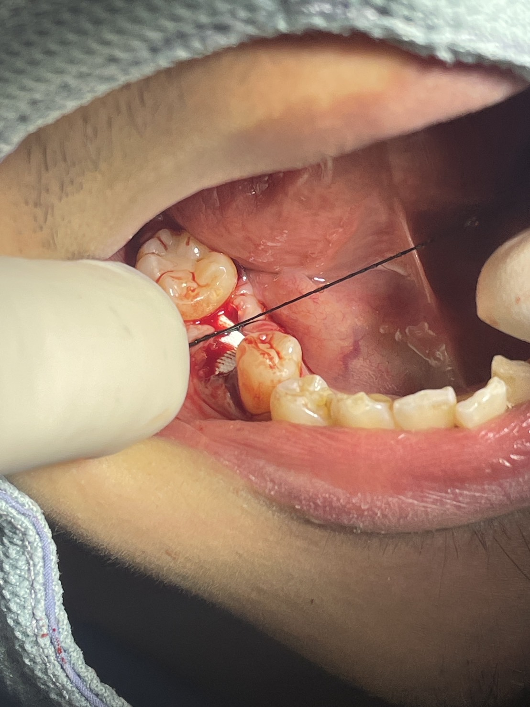
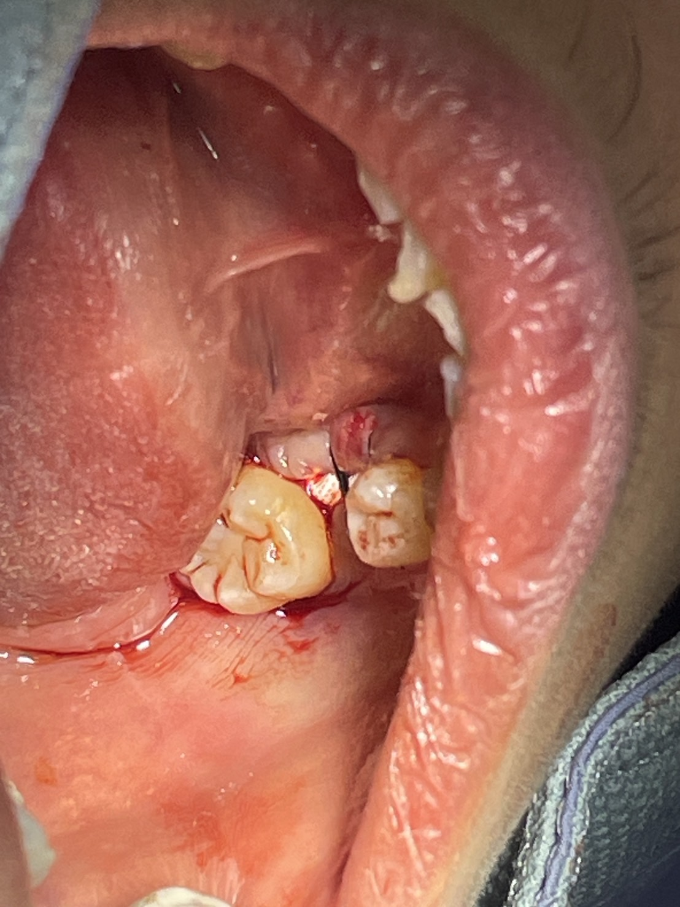

3D數位植牙｜案例分享
本案例為右下第一大臼齒（#46）殘根拔除後進行「齒槽脊保存術 / 引導骨再生術（ GBR）」，並採用可暴露式不可吸收再生膜之臨床案例。以下為完整的 Case Report 整理與不可吸收再生膜的詳細學術解析：
1. Surgical Step Details
01 & 02：殘根挺鬆與微創拔除
使用牙拔挺與拔牙鉗（針對 #46 嚴重破壞之殘根進行微創分牙與挺鬆，避免對周圍頰舌側骨壁造成額外創傷。
03 & 05：殘根完整拔除與清創
完整拔除殘根（包含多根結構），徹底清理拔牙窩內之肉芽組織，為後續骨粉移植提供乾淨無感染之血塊附著環境。
04.：拔牙窩骨壁評估
清創後檢視 #46 齒槽窩，確定骨壁結構與深度，評估補骨所需之體積與空間維護需求。
06：骨移植材料填補與 d-PTFE 再生膜置入
於拔牙窩內密實填補顆粒狀骨粉，隨後將高密度聚四氟乙烯膜邊緣插入頰舌側與鄰牙之骨膜下（Subperiosteally），將骨粉完整封閉於拔牙窩內。
07& 08：減張縫合與膜部分暴露
進行縫合固定軟組織與再生膜。
由於拔牙創口範圍較大且未做大規模拉瓣，再生膜於創口中央適度暴露，免去為了追求 Primary closure 而破壞角化牙齦與變平黏膜齒槽溝的風險。
2. Clinical Summary
Diagnosis & Treatment Site: 右下第一大臼齒（#46）殘根，計畫拔除後進行二階段植牙。
Surgical Procedure: 微創拔牙術合併齒槽脊保存術（，使用移植骨粉填補，並搭配高密度不可吸收再生膜採取開放式覆蓋。
Prognosis & Expectations: 利用 d-PTFE 膜優異的抗菌破壞特性，免除大規模翻瓣與軟組織拉緊的壓力，可最大程度保留角化牙齦寬度，並維持足夠的齒槽骨高度與寬度，為未來的植牙手術奠定良好基石。
臨床專題解析：不可吸收再生膜（d-PTFE）之特性與應用
在齒槽脊保存術中，若遇到缺損較大或軟組織不足以完全無張力縫合時，「開放式再生膜技術」是極佳的臨床選擇，其中最具代表性的材料即為高密度聚四氟乙烯膜（dense PTFE / d-PTFE）。
1. 何謂不可吸收再生膜（d-PTFE）？
聚四氟乙烯（PTFE）材料在口腔再生領域主要分為兩類：
早期用於 GBR，若暴露於口腔中，細菌極易穿透孔隙引發嚴重感染，因此必須嚴格執行 Primary closure。
d-PTFE（Dense PTFE）： 孔隙極小（通常 < 0.2 µm），密度極高。這種微孔結構能夠阻擋口腔細菌與上皮細胞穿透，但同時允許營養物質與液體微幅滲透，因此即使完全暴露於口腔環境中，也不會導致下方的骨移植區感染。
2. d-PTFE 不可吸收膜的核心優點
免除 Primary Closure 的壓力： 傳統使用可吸收膠原蛋白膜若暴露於口腔，會迅速被細菌分解吸收導致補骨失敗。d-PTFE 允許意圖性暴露，無須做減張切開，可大幅減少術後腫脹與疼痛。
完整保留角化牙齦： 若為了強行縫合創口而拉動頰側皮瓣，常導致角化牙齦向冠向位移、黏膜齒槽溝（MGJ）消失。d-PTFE 採取開放式癒合，上皮會沿著膜的上方向中央爬行，能最大程度保留原有的角化牙齦組織。
優異的細菌屏障功能： 小於 0.2 µm 的孔隙結構遠小於口腔常見細菌（通常為 0.5–2 µm），能有效阻隔細菌侵入骨粉區。
移除極為簡便： 通常於術後 3 至 4 週（上皮細胞已於膜下方完成初步屏障建立）時，無需施打麻醉，直接用無菌鑷子輕輕夾住暴露邊緣即可無痛拉出。
3. 適應症
拔牙窩齒槽脊保存術： 尤其是大臼齒區拔牙後軟組織缺損較大、上皮無法無張力對齊時。
頰側骨壁缺失之拔牙窩： 拔牙窩伴隨單側骨壁破壞，需要維護空間與阻隔軟組織長入者。
角化牙齦極度缺乏的區域： 希望在骨再生過程中同時保留軟組織解剖構造者。
4. 臨床操作關鍵注意事項
邊緣延伸： 膜的邊緣應向拔牙窩周圍健全骨壁下方延伸至少 3–5 mm，並將邊緣塞入骨膜下，確保穩定度。
避免過度緊繃： 縫合僅需將軟組織邊緣適度固定，使膜緊貼骨壁與骨粉，無需強行牽拉軟組織蓋住膜。
術後照護： 膜暴露期間，切勿讓患者使用牙刷直接刷洗膜表面。建議使用 0.12% 氯己定（Chlorhexidine, CHX）漱口水進行局部消毒與清潔，維持膜面潔淨。
移除時機： 一般建議於術後 3–4 週 移除。此時下方的骨移植材料已由早期血塊與纖維組織穩定包裹，且邊緣上皮已初步形成屏障，順利轉入骨重塑期。







